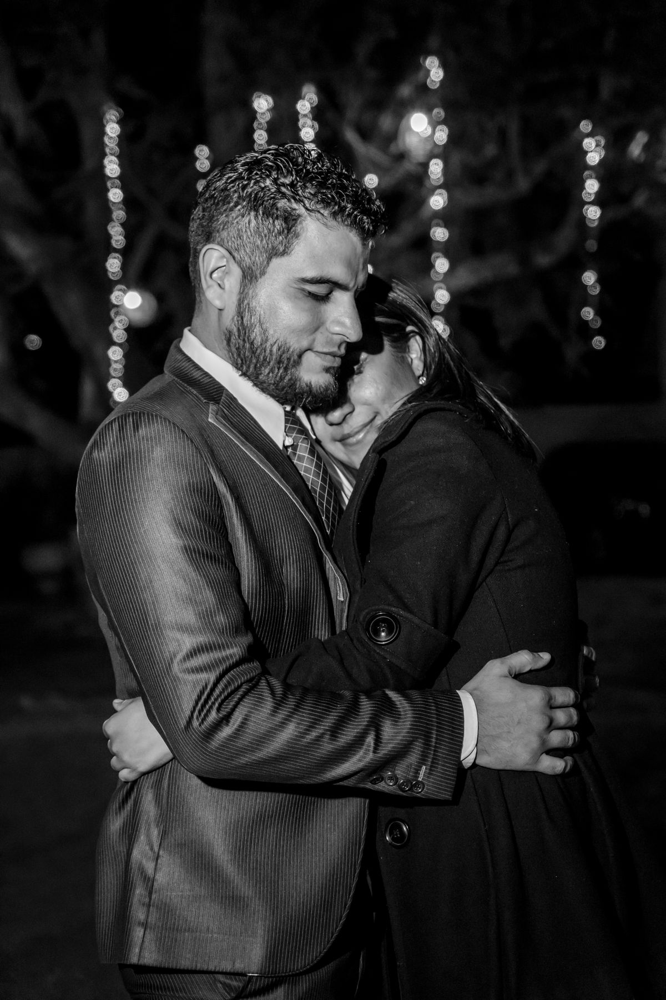

Madam Aylak
Where We've Traveled

Emma & James
every place we have wandered together
tap to relive our journeys
6 places · 6 countries · 5,263 km together
your song, kept forever
Madam Aylak · Living Travel Map